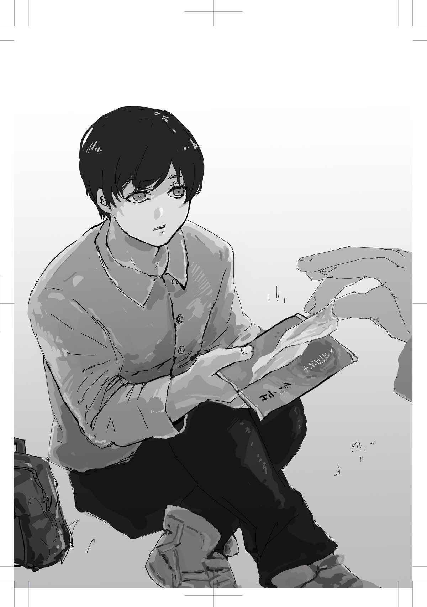

ゲームを嫌いになる方法
お金は権力。貨幣権力説。そう言われればそうなのだけれど、それは果たして悪いことなのだろうか？ お父さんが僕たちのために歯を食いしばって会社の命令に従うことは、大切なことなのではないだろうか？
「でもさ。仮に労働者がお金によって命令されているのだとしても、それは仕方がないんじゃない？ お金を稼がないと生きていけないし、誰かが労働しなければ社会が成り立たないのは事実でしょ？ それに・・・」
「それに？」
「ニケの言うことはおかしくない？」
「ほう、どうしてや？」
不意に閃いた反論を、ニケにぶつけてみる。
「人は貢献欲を持っているから、自発的に誰かの役に立ちたいって思うんだよね？ なら、命令されていようが、命令されていまいが、喜んで労働するんじゃないの？ それなのに、労働が嫌いな人は多いよね。これって矛盾してない？」
「それは命令のネガティブな側面を過小評価しとるわ。命令っていうのはそんな生やさしいもんやないで」
「そうなの？」
「せや、たしかに人には貢献欲がある。しかし、貢献欲は強制や命令によって抑圧されているんや」
「命令や強制によって、貢献欲を抑圧されてる？」
「そう。だから『他者からの強制』という意味での労働ってのは悪なんや」
「よくわからないな。僕は命令されようが、命令されまいが、労働なんかしたくないよ」
「それはそうかもしらんけどな・・・ごめんちょっとその前に、ティッシュ一枚くれへん？」
「え？ いいけど」
「ありがとう」
僕がティッシュを手渡すと、ニケは思いっきり鼻をかんだ。
「すまんな、この季節は鼻水が出てあかんのや。最近は体調も悪いから余計にな」
「花粉症？」
「さぁな。検査してへんからわからん」
僕と同じだ。僕もこの時期は原因不明の鼻水にやられるけど、検査をずっと拒んでいる。
「ところで少年、いまどんな気持ちやった？」
「どんな気持ちって・・・なにが？」
「俺にティッシュ渡してどう思った？」
「なんとも思わないけど」
「役に立って嬉しいとか、そんな風に思わんかったか？」
「別に、『ティッシュ持ち歩いててよかったなぁ』くらいかな」
「せやろ、じゃあ次は・・・おい、ティッシュよこせ！」
「は？」
ニケは大袈裟に拳を振り上げて僕に言った。波紋が広がるように、静まり返った公園にニケの声が響き、消えていく。あまりにも芝居がかったその場面に、僕は「ふふっ」と笑ってしまった。
「なに笑てんねん」
「いやだってさ・・・」
脅す演技をしたつもりなのだろうけど、ぜんぜん怖くなかった。ある意味で驚きはしたが。
「まぁええわ。それより『誰が渡すかボケ』って気分になったやろ？」
「まぁね。『なにやってるんだろうこの人』っていう気持ちの方が大きかったけど」
「同じティッシュを渡すという行為でも、命令されるかされへんかで、感じ方はまったく違うねん」
「たしかにそうだね」
「せやろ。不思議やないか？ どっちにしても『ティッシュを渡す』という結果は同じや。でも、お願いされたら渡したい気分になるのに、命令されたら『誰が渡すかボケ』っていう気分になる」
「当然じゃないの？ 命令されるのって誰にとっても嫌なことでしょ？」
「だったら労働も、命令されるからやりたくなくなるとは考えられへんか？」
ふむ。言われてみればそうかもしれない。でも・・・
「どうだろう。もしお金が有り余っている状況で『労働してくれる？』と誰かにお願いされても、積極的にやるとは思えないよ。僕は」
「それはそうかもしらん」
「は？」
「なにが『は？』やねん」
「じゃあ、貢献欲なんてないんじゃないの？」
「なんでそうなるねん。ええか、人間がなにをやりたがるかなんてわからん。食欲旺盛な人がお腹空いてても嫌いな野菜は食べへんやろ？ 俺が言いたいのはな、やりたいことであろうが、やりたくないことであろうが、命令されたら嫌になるってことや。少年、ゲームは好きか？」
「え？ まぁ好きだよ」
「じゃあ、これから毎朝俺が『おい、早くゲームしろよ』とか『ゲームどこまで進んだ？』とか『なんでこんだけしか進んでへんねん！』とか言い続けるとしたらどうや？」
「そりゃあ、縁を切るかな」
「寂しいこと言うなや」
再びニケは芝居のように大袈裟に落ち込んだそぶりを見せる。こういう茶番に付き合うのも、まぁ悪くない。
「嘘だよ。ズッ友だよ、ズッ友」
「ズッ友て・・・いまの中学生も知ってるんやな」
「そんなに古い言葉なの？」
「まぁな。冗談はええとして、俺じゃなくてオカンでもええわ。オカンが毎日のように『ゲームしろ』って言ってきたらどうや？ 縁切るってわけにもいかんで」
「ゲームが嫌いになるかもね」
「せやろ。それを見て『ウチの子はゲームが嫌いで、どうしようもない子やわ』ってオカンが周りに言いふらしたらどう思う？」
「ちょっとよくわからない世界観だけど、違和感はあるね。『あれこれ文句を言われないなら勝手にゲームするのに』って思うよ」
「そうやろ。でも、人の役に立つことって、往々にしてそういう状況にある。あれこれ言われるからやりたくなくなるだけで、本当なら人に誰かの役に立つことは喜ばしいことなんや。ティッシュを渡してくれた少年は、そのことを知ってるはずや」
僕が人の役に立つことを喜んでいる？ 本当にそうだろうか？ 僕は自分が本質的に怠惰で、わがままな人間だと思っていた。そして、多かれ少なかれ、みんな同じだと思っていた。でも、たしかに僕は電車で老人に席を譲り、ニケにティッシュを渡した。それは人の役に立つことを欲していたからなのだろうか？
「人は役に立つことを欲する。でも、あらゆる行為は命令によって労働化する。だから貢献が嫌なことやと現代人は思い込んでるねん」